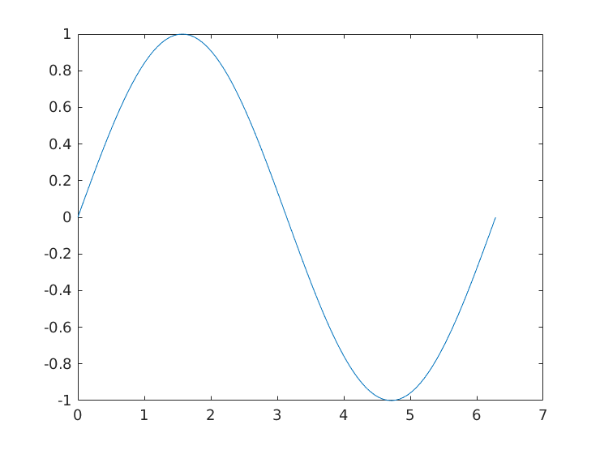
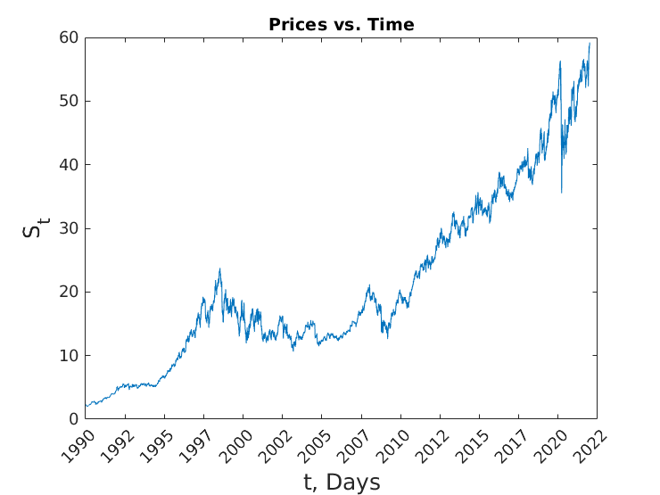
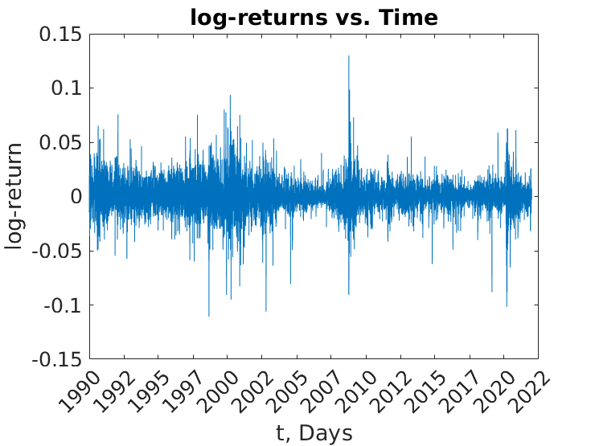
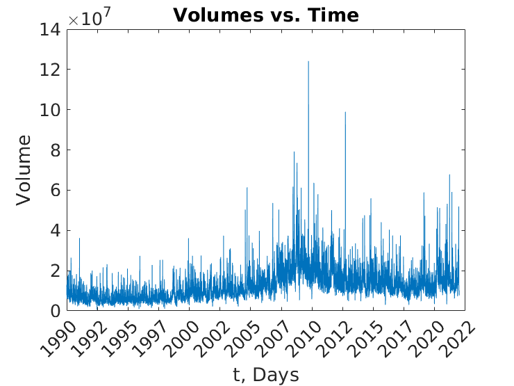

Matlab Course Session 2 part 2
Contents
Functions
close all
[y, h] = mysin_func(0:pi/50:2*pi);

I/O Example 1
A = [1 2 3 4 5];
fid = fopen('some_data.txt', 'w');
fwrite(fid, A);
fclose(fid);
clear
fid = fopen('some_data.txt', 'r');
fread(fid)
fclose(fid);
ans =
1
2
3
4
5
I/O Example 2
str = 'this is a test';
fid = fopen('test.txt', 'w');
fwrite(fid, str, 'char');
fclose(fid);
fid = fopen('test.txt', 'r');
fread(fid, 5, 'uint8=>char')
fread(fid, 5, 'char')
fclose(fid);
ans =
5×1 char array
't'
'h'
'i'
's'
' '
ans =
105
115
32
97
32
I/O Example 3
A = [1 2 3 4];
fid = fopen('some_data.txt', 'w');
fprintf(fid, '%i', A);
fclose(fid);
fid = fopen('some_data.txt', 'r');
fscanf(fid, '%i',1)
fclose(fid);
ans =
1234
Times Table
display('------------------------------')
display('Times Table:')
fprintf(1,' X ');
for i = 0:9
fprintf(1,'%2d ',i);
end
fprintf(1,'\n');
for i = 0:9
fprintf(1,'%2d ',i);
for j = 0:9
fprintf(1,'%2d ',i*j);
end
fprintf(1,'\n');
end
display('------------------------------')
------------------------------
Times Table:
X 0 1 2 3 4 5 6 7 8 9
0 0 0 0 0 0 0 0 0 0 0
1 0 1 2 3 4 5 6 7 8 9
2 0 2 4 6 8 10 12 14 16 18
3 0 3 6 9 12 15 18 21 24 27
4 0 4 8 12 16 20 24 28 32 36
5 0 5 10 15 20 25 30 35 40 45
6 0 6 12 18 24 30 36 42 48 54
7 0 7 14 21 28 35 42 49 56 63
8 0 8 16 24 32 40 48 56 64 72
9 0 9 18 27 36 45 54 63 72 81
------------------------------
hist_stock_data Example
clear
stock_data1 = hist_stock_data('01011990','todaydatestr','KO','PEP');
stock_data1 = hist_stock_data('01011990','todaydatestr','KO','PEP','^FTSE', 'AAPL');
price_series1 = [stock_data1(1).AdjClose,...
stock_data1(2).AdjClose];
date1 = [stock_data1(1).Date,...
stock_data1(2).Date];
save('ko_pep_data1_new.mat','stock_data1')
stock_data2 = hist_stock_data('01011990','31121998','KO','PEP');
price_series2 = [stock_data2(1).AdjClose,...
stock_data2(2).AdjClose];
date2 = [stock_data2(1).Date,...
stock_data2(2).Date];
save('ko_pep_data2_new.mat','stock_data2')
Financial Data Example
clear all, close all
warning off all
rng('default');
load('ko_pep_data1_new.mat')
Volume1 = stock_data1(1).Volume;
price_series1 = [stock_data1(1).AdjClose,...
stock_data1(2).AdjClose];
date1 = [stock_data1(1).Date,...
stock_data1(2).Date];
t = datenum(date1(:,1));
Plot Prices
figure,
plot(t,price_series1(:,1)),
xlim([0,length(t)]),datetick
title('Prices vs. Time')
xlabel('t, Days','fontsize',14)
ylabel('S_t','fontsize',14)
print('prices.eps','-depsc')

Compute Daily Returns
returns = diff(price_series1)./price_series1(2:end,:);
size_returns = length(returns);
Compute Daily log-returns
lreturns = price2ret(price_series1);
size_lreturns = length(lreturns);
Plot log-returns
figure
plot(t(1:end-1,1),lreturns(:,1)),
xlim([0,length(t)-1]),datetick
title('log-returns vs. Time')
xlabel('t, Days','fontsize',14)
ylabel('log-return','fontsize',14)
set(gca,'fontsize',14)
print('log_returns.eps','-depsc')

Plot Volumes
figure,
plot(t,Volume1),
xlim([0,length(t)]),datetick
title('Volumes vs. Time')
xlabel('t, Days','fontsize',14)
ylabel('Volume','fontsize',14)
set(gca,'fontsize',14)
print('volumes.eps','-depsc')

Sample Statistics
display('------------------------------')
display('Sample Statistics:')
mean_lr = mean(lreturns(:,1));
display(sprintf('mean_lr : %.9f', mean_lr))
std_lr = std(lreturns(:,1));
display(sprintf('std_lr : %.9f', std_lr))
min_lr = min(lreturns(:,1));
display(sprintf('min_lr : %.9f', min_lr))
max_lr = max(lreturns(:,1));
display(sprintf('max_lr : %.9f', max_lr))
ske_lr = skewness(lreturns(:,1));
display(sprintf('ske_lr : %.9f', ske_lr))
kurt_lr = kurtosis(lreturns(:,1));
display(sprintf('kurt_lr : %.9f', kurt_lr))
sacf_lr = sacf(lreturns(:,1),1,1,0);
display(sprintf('sacf_lr : %.9f', sacf_lr))
sacf_lr2 = sacf(lreturns(:,1).^2,1,1,0);
display(sprintf('sacf_lr2 : %.9f', sacf_lr2))
[jb_lr,pval,H] = jarquebera(lreturns(:,1));
display(sprintf('jb_lr : %i', H))
[q1, pval1] = ljungbox(lreturns(:,1)',20);
[q2, pval2] = ljungbox(lreturns(:,1)'.^2,20);
kst_lr = kstest(lreturns(:,1));
display(sprintf('kst_lr : %i', kst_lr))
display('------------------------------')
------------------------------
Sample Statistics:
mean_lr : 0.000400915
std_lr : 0.014064417
min_lr : -0.110720830
max_lr : 0.129970432
ske_lr : -0.094285393
kurt_lr : 9.537332361
Undefined function 'sacf' for input arguments of type 'double'.
Error in session3 (line 152)
sacf_lr = sacf(lreturns(:,1),1,1,0);
Histogram
[freq,bin]=hist(lreturns(:,1),500);
figure
bar(bin,freq/sum(freq))
hold on
m = mean(lreturns(:,1));
s = std(lreturns(:,1));
x = [min(lreturns(:,1)):(max(lreturns(:,1))-min(lreturns(:,1)))...
/1000:max(lreturns(:,1))];
plot(x,normpdf(x,m,s)*(bin(2)-bin(1)),'-m','linewidth',2)
axis tight
legend({'log-return','normal'})
title('log-return relative frequency distribution','fontsize',14)
xlabel('log-return','fontsize',14)
ylabel('relative frequency','fontsize',14)
set(gca,'fontsize',14)
print('fat_tails.eps','-depsc')
figure,
lreturns1 = lreturns(:,1);
loglog(sort(lreturns1(lreturns1>0)),1-[1:(length(lreturns1(lreturns1>0)))]...
/length(lreturns1(lreturns1>0)),'+b')
hold on
loglog(sort(-lreturns1(lreturns1<0)),1-[1:(length(lreturns1(lreturns1<0)))]...
/length(lreturns1(lreturns1<0)),'xr')
x = [max(lreturns1)/1000:max(lreturns1)/1000:max(lreturns1)];
loglog(x,1-(normcdf(x,m,s)-0.5)*2,'-m','linewidth',2)
axis tight
legend({'pos ret','neg ret','normal'})
title('complemetary cumulative log-return distribution','fontsize',14)
xlabel('log-return','fontsize',14)
ylabel('complemetary cumulative distribution','fontsize',14)
set(gca,'fontsize',14)
print('fat_tailsCum.eps','-depsc')
Autocorrelagram
figure
[a1,lags1] = autocorr(lreturns(:,1),250);
plot(lags1,a1,'-r')
hold on
[a2,lags2] = autocorr(abs(lreturns(:,1)),250);
plot(lags2,a2,'-m')
[a3,lags3] = autocorr(lreturns(:,1).^2,250);
plot(lags3,a3,'-b')
plot([0 300],[0 0],'-k')
axis([0 250 -.15 1])
xlabel('lags (days)','fontsize',14)
ylabel('autocorrelation','fontsize',14)
title('KO autocorrelation of log-returns','fontsize',14)
set(gca,'fontsize',14)
legend({'log-returns','|log-returns|','log-returns^2'})
print('autocorrelation1Day.eps','-depsc')
Volatility
window = 252;
Y1 = cumsum(lreturns(:,1),1);
Y2 = cumsum(lreturns(:,1).^2,1);
volatility = sqrt((Y2((window+1):end)-Y2(1:(end-window)))...
/window-((Y1((window+1):end)-Y1(1:(end-window)))/window).^2);
Y1 = cumsum(Volume1(2:end),1) ;
Y2 = cumsum(Volume1(2:end).^2,1) ;
meanVolume = sqrt((Y2((window+1):end)-Y2(1:(end-window)))...
/window-((Y1((window+1):end)-Y1(1:(end-window)))/window).^2);
figure,
subplot(2,1,1)
hold on,
plot(t((window+2):end),volatility),
xlim([0,size(t((window+2):end),1)]),datetick,
xlabel('date','fontsize',14)
ylabel('volatility','fontsize',14)
set(gca,'fontsize',14)
hold off
subplot(2,1,2)
plot(t((window+2):end),meanVolume),
xlim([0,size(t((window+2):end),1)]),datetick,
xlabel('date','fontsize',14)
ylabel('volume','fontsize',14)
set(gca,'fontsize',14)
print('volatility.eps','-depsc')
output1 = tsmovavg(lreturns(:,1)'.^2,'e',252);
output2 = tsmovavg(lreturns(:,1)'.^2,'s',252);
figure,
hold on,
plot(t(2:end),sqrt(output1)),
plot(t(2:end),sqrt(output2),'r'),
datetick,
hold off
c=corrcoef(meanVolume,volatility);
Volume vs. Volatility
figure,
plot((meanVolume),(volatility),'+b')
text(0.6*max(meanVolume),0.6*max(volatility),...
['correlation coeff = ',num2str(c(1,2))],'fontsize',14)
xlabel('volume','fontsize',14)
ylabel('volatility','fontsize',14)
set(gca,'fontsize',14)
print('volume_volatility.eps','-depsc')
qq-plots
figure,
qqplot(lreturns(:,1)),
figure,
PD = makedist('tLocationScale', mean(lreturns(:,1)), std(lreturns(:,1)),3);
qqplot(lreturns(:,1),PD)
figure,
PD = makedist('GeneralizedExtremeValue',mean(lreturns(:,1)), std(lreturns(:,1)), 3);
qqplot(lreturns(:,1),PD)
Parametric VaR
display('------------------------------')
display('Parametric VaR')
VaR_95=portvrisk(mean(returns(:,1)), std(returns(:,1)),0.05,1);
VaR_99=portvrisk(mean(returns(:,1)), std(returns(:,1)),0.01,1);
display(sprintf('VaR 95: %.9f', VaR_95))
display(sprintf('VaR 99: %.9f', VaR_99))
display('------------------------------')
display('Empirical VaR')
slr=sort(lreturns);
N = length(slr);
VaR_95_emp=-(slr(ceil(N*0.05))+slr(floor(N*0.05)))/2;
VaR_99_emp=-(slr(ceil(N*0.01))+slr(floor(N*0.01)))/2;
display(sprintf('VaR 95: %.9f', VaR_95_emp))
display(sprintf('VaR 99: %.9f', VaR_99_emp))
display('------------------------------')
Parametric CVaR
display('------------------------------')
display('Parametric CVaR')
m = mean(lreturns(:,1));
s = std(lreturns(:,1));
CVaR_95=-m+s*(normpdf(norminv(0.05,0,1),0,1))./(1-0.95);
CVaR_99=-m+s*(normpdf(norminv(0.01,0,1),0,1))./(1-0.99);
display(sprintf('CVaR 95: %.9f', CVaR_95))
display(sprintf('CVaR 99: %.9f', CVaR_99))
display('------------------------------')
display('Empirical CVaR')
CVaR_95_emp=-mean(slr(1:ceil(N*0.05)));
CVaR_99_emp=-mean(slr(1:ceil(N*0.01)));
display(sprintf('CVaR 95: %.9f', CVaR_95_emp))
display(sprintf('CVaR 99: %.9f', CVaR_99_emp))
display('------------------------------')